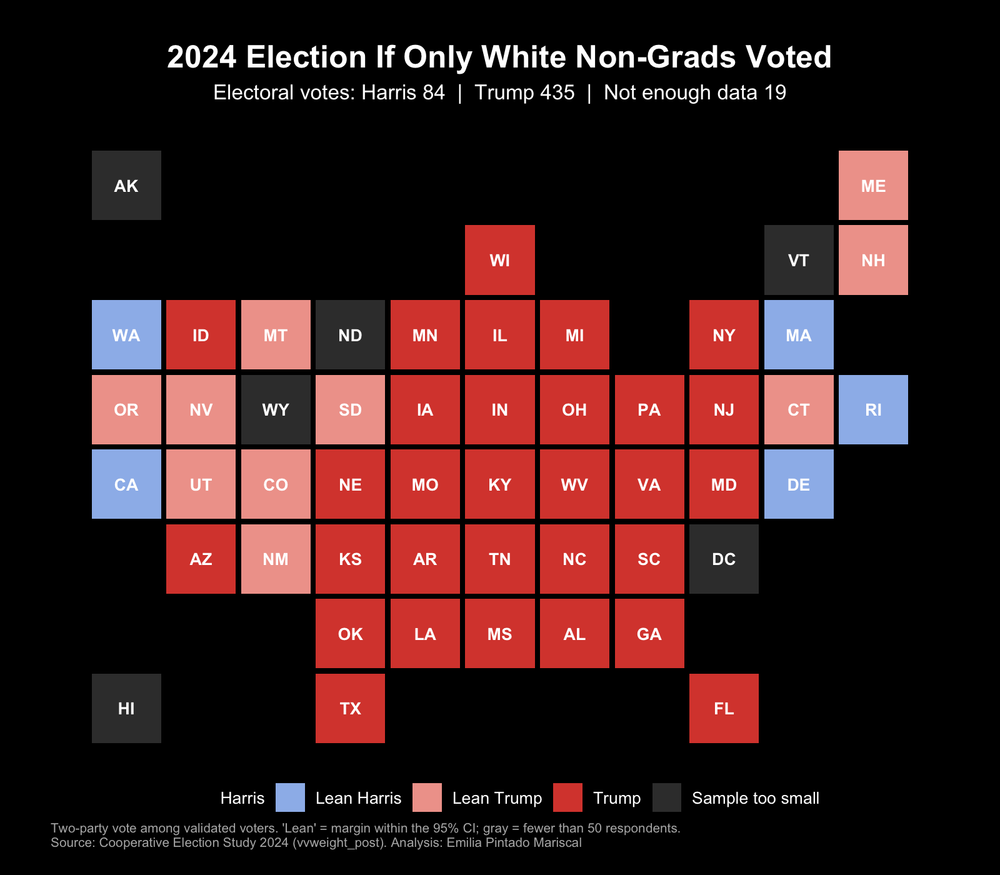
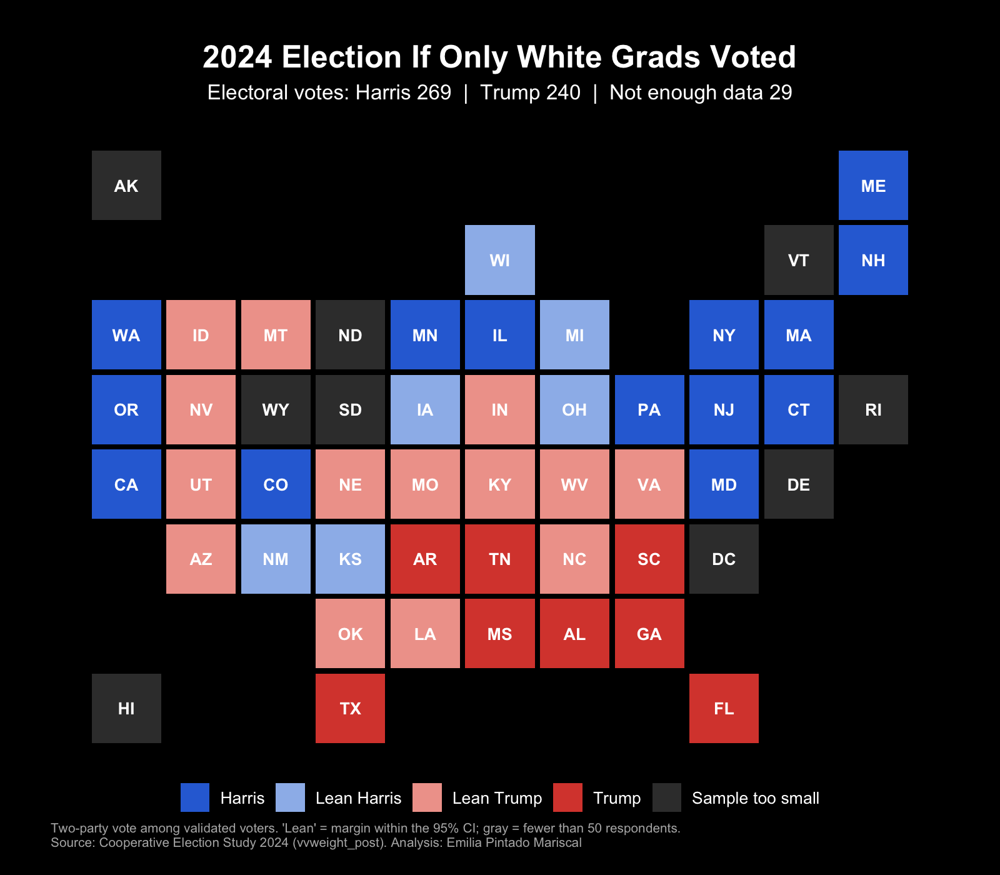
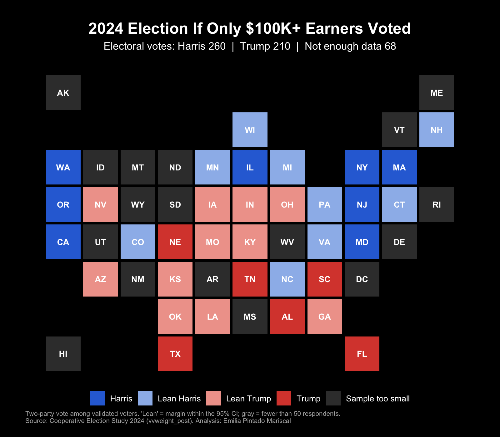
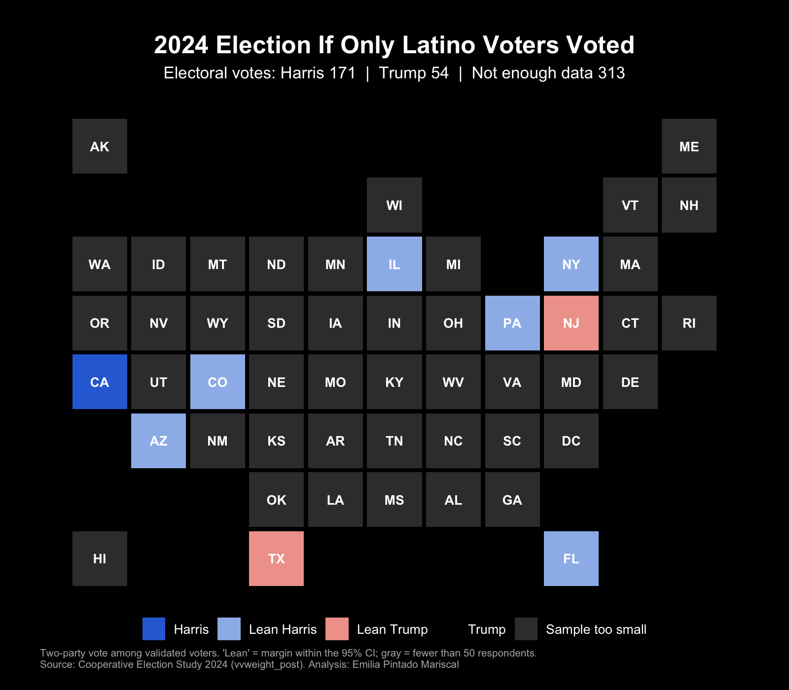
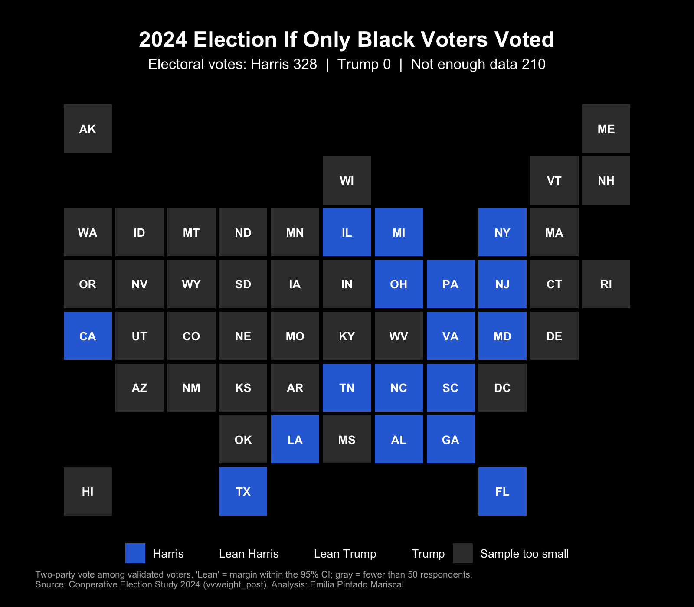

Election analysis · R
The 2024 Election If Only One Group Had Voted
Who would have won the presidency in 2024 if only white college graduates had voted? Or only Latinos? Using the 2024 Cooperative Election Study, a survey of 60,000 Americans, I estimated the two-party vote for Harris and Trump in every state for five groups of voters and added up the electoral votes each candidate would have won.
| If only this group voted | Harris | Trump | Not enough data |
|---|---|---|---|
| White voters without a degree | 84 | 435 | 19 |
| White college graduates | 269 | 240 | 29 |
| $100K+ family income | 260 | 210 | 68 |
| Latino voters | 171 | 54 | 313 |
| Black voters | 328 | 0 | 210 |
Electoral votes. Maine and Nebraska are assigned whole to the statewide winner.
The education divide among white voters is the sharpest contrast. White voters without a degree would have given Trump 435 electoral votes; white college graduates would have elected Harris with 269, exactly the minimum needed, and in Wisconsin, Michigan and Ohio her lead among them is within the margin of error.
Unlike most maps of this kind, these do not paint every state. A state is shown in a lighter shade when the winner’s lead is not statistically significant, and in gray when the survey has fewer than 50 respondents from that group there. For Latino and Black voters, that leaves much of the map gray: a national survey cannot say how these groups voted in states where few of them live.





Method
- Keeps respondents whose vote in the 2024 general election is confirmed in official voter records (validated voters) and who report voting for Harris or Trump.
- Weights each response with vvweight_post, the weight the CES recommends for describing voters with post-election questions.
- Estimates Harris’s share of the two-party vote by state and group, with a standard error based on the Kish effective sample size, n = (Σw)² / Σw².
- Checks the national result: Harris gets 49.1% of the two-party vote in the survey, against about 49.2% in the official count.
Data: Cooperative Election Study 2024 Common Content, Harvard Dataverse, doi:10.7910/DVN/X11EP6.
Code
# ==============================================================================
# 2024 Presidential Election: If Only ___ Voted
# Source: Cooperative Election Study (CES) 2024 Common Content
# Harvard Dataverse, doi:10.7910/DVN/X11EP6 (CC0 license)
#
# For each state and group calculate the bipartisan vote (Harris vs. Trump)
# Create a map with the sum of the votes
# Packages: readr, dplyr, ggplot2
# ==============================================================================
library(readr)
library(dplyr)
library(ggplot2)
base_dir <- "~/Downloads/Personal/NYT Fellowship"
data_file <- file.path(base_dir, "datos", "CCES24_Common_OUTPUT_vv_topost_final.csv")
output_dir <- file.path(base_dir, "graficas")
dir.create(output_dir, showWarnings = FALSE)
min_n <- 50 # fewer cases than this in a state/group = insufficient (gray)
# ------------------------------------------------------------------------------
# 1. Data
# ------------------------------------------------------------------------------
ces <- read_csv(
data_file,
col_select = c(inputstate, race, hispanic, educ, faminc_new,
TS_g2024, CC24_410, vvweight_post),
show_col_types = FALSE
)
# Registered voters in 2024 who voted for Harris (1), Trump (2)
# Weight: vvweight_post, CES recommendation
voters <- ces %>%
filter(TS_g2024 %in% 1:6,
CC24_410 %in% c(1, 2),
!is.na(vvweight_post)) %>%
mutate(harris = as.numeric(CC24_410 == 1),
w = vvweight_post)
# ------------------------------------------------------------------------------
# 2. Groups
# race: 1 White, 2 Black, 3 Hispanic or Latino
# hispanic: 1 = Yes
# educ: 1 No HS, 2 HS, 3 Some college, 4 2-year, 5 4-year, 6 Post-grad
# faminc_new: 10-16 = $100,000 or more (97 = rather not say)
# ------------------------------------------------------------------------------
voters <- voters %>%
mutate(
latino = race == 3 | hispanic %in% 1,
white = race == 1 & !latino,
college_grad = educ %in% 5:6
)
groups <- list(
"White Non-Grads" = quote(white & !college_grad),
"White Grads" = quote(white & college_grad),
"$100K+ Earners" = quote(faminc_new %in% 10:16),
"Latino Voters" = quote(latino),
"Black Voters" = quote(race == 2)
)
# ------------------------------------------------------------------------------
# 3. States: FIPS, abbreviation, electoral votes in 2024, and tile position
# (Maine and Nebraska assign all electoral votes to the statewide winner)
# ------------------------------------------------------------------------------
states <- tribble(
~fips, ~st, ~ev, ~row, ~col,
2, "AK", 3, 1, 1, 23, "ME", 4, 1, 11,
55, "WI", 10, 2, 6, 50, "VT", 3, 2, 10, 33, "NH", 4, 2, 11,
53, "WA", 12, 3, 1, 16, "ID", 4, 3, 2, 30, "MT", 4, 3, 3,
38, "ND", 3, 3, 4, 27, "MN", 10, 3, 5, 17, "IL", 19, 3, 6,
26, "MI", 15, 3, 7, 36, "NY", 28, 3, 9, 25, "MA", 11, 3, 10,
41, "OR", 8, 4, 1, 32, "NV", 6, 4, 2, 56, "WY", 3, 4, 3,
46, "SD", 3, 4, 4, 19, "IA", 6, 4, 5, 18, "IN", 11, 4, 6,
39, "OH", 17, 4, 7, 42, "PA", 19, 4, 8, 34, "NJ", 14, 4, 9,
9, "CT", 7, 4, 10, 44, "RI", 4, 4, 11,
6, "CA", 54, 5, 1, 49, "UT", 6, 5, 2, 8, "CO", 10, 5, 3,
31, "NE", 5, 5, 4, 29, "MO", 10, 5, 5, 21, "KY", 8, 5, 6,
54, "WV", 4, 5, 7, 51, "VA", 13, 5, 8, 24, "MD", 10, 5, 9,
10, "DE", 3, 5, 10,
4, "AZ", 11, 6, 2, 35, "NM", 5, 6, 3, 20, "KS", 6, 6, 4,
5, "AR", 6, 6, 5, 47, "TN", 11, 6, 6, 37, "NC", 16, 6, 7,
45, "SC", 9, 6, 8, 11, "DC", 3, 6, 9,
40, "OK", 7, 7, 4, 22, "LA", 8, 7, 5, 28, "MS", 6, 7, 6,
1, "AL", 9, 7, 7, 13, "GA", 16, 7, 8,
15, "HI", 4, 8, 1, 48, "TX", 40, 8, 4, 12, "FL", 30, 8, 9
)
stopifnot(nrow(states) == 51, sum(states$ev) == 538)
# ------------------------------------------------------------------------------
# 4. Estimation by state and group
# Weighted proportion of Harris in the two-party vote. The standard error uses
# the Kish effective sample size, n_ef = (Σw)^2 / Σw^2, to reflect the loss of
# precision from the weights.
# ------------------------------------------------------------------------------
estimate <- function(group_name, condition) {
voters %>%
filter(!!condition) %>%
group_by(fips = inputstate) %>%
summarise(
n = n(),
n_ef = sum(w)^2 / sum(w^2),
harris = weighted.mean(harris, w),
.groups = "drop"
) %>%
mutate(group = group_name)
}
results <- bind_rows(Map(estimate, names(groups), groups)) %>%
right_join(tidyr::expand_grid(states, group = names(groups)),
by = c("fips", "group")) %>%
mutate(
n = coalesce(n, 0L),
se = sqrt(harris * (1 - harris) / n_ef),
margin = 2 * harris - 1, # Harris - Trump, in points
signif = abs(harris - 0.5) > 1.96 * se,
class = case_when(
n < min_n ~ "Sample too small",
harris > 0.5 & signif ~ "Harris",
harris > 0.5 ~ "Lean Harris",
harris <= 0.5 & signif ~ "Trump",
TRUE ~ "Lean Trump"
),
class = factor(class, levels = c("Harris", "Lean Harris", "Lean Trump",
"Trump", "Sample too small")),
group = factor(group, levels = names(groups))
)
# Electoral votes: "Lean" states count for the candidate above; gray ones are not assigned
electoral_votes <- results %>%
group_by(group) %>%
summarise(
harris_ev = sum(ev[class %in% c("Harris", "Lean Harris")]),
trump_ev = sum(ev[class %in% c("Trump", "Lean Trump")]),
unassigned = sum(ev[class == "Sample too small"]),
.groups = "drop"
)
# Review: nationally, Harris's vote should remain close to the actual result
# (48.3% of the total, ~49.2% of the two-party vote)
cat("Harris, two-party vote nationally (CES, weighted):",
round(100 * weighted.mean(voters$harris, voters$w), 1), "%\n\n")
print(electoral_votes)
# ------------------------------------------------------------------------------
# 5. Maps
# ------------------------------------------------------------------------------
colors <- c("Harris" = "#2E6FD8", "Lean Harris" = "#9DBBEB",
"Lean Trump" = "#F0A39A", "Trump" = "#D9483B",
"Sample too small" = "#3A3A3A")
map_plot <- function(g) {
data <- filter(results, group == g)
ev <- filter(electoral_votes, group == g)
ggplot(data, aes(x = col, y = -row)) +
geom_tile(aes(fill = class), width = 0.93, height = 0.93) +
geom_text(aes(label = st), colour = "white", size = 3.4, fontface = "bold") +
scale_fill_manual(values = colors, drop = FALSE, name = NULL) +
coord_equal() +
labs(
title = paste0("2024 Election If Only ", g, " Voted"),
subtitle = paste0("Electoral votes: Harris ", ev$harris_ev, " | Trump ", ev$trump_ev,
if (ev$unassigned > 0) paste0(" | Not enough data ", ev$unassigned)),
caption = paste0("Two-party vote among validated voters. 'Lean' = margin within the 95% CI; ",
"gray = fewer than ", min_n, " respondents.\n",
"Source: Cooperative Election Study 2024 (vvweight_post). Analysis: Emilia Pintado Mariscal")
) +
theme_void(base_size = 12) +
theme(
plot.background = element_rect(fill = "black", colour = NA),
text = element_text(colour = "white"),
plot.title = element_text(face = "bold", size = 18, hjust = 0.5),
plot.subtitle = element_text(size = 12, hjust = 0.5, margin = margin(6, 0, 10, 0)),
plot.caption = element_text(size = 7.5, colour = "grey70", hjust = 0),
legend.position = "bottom",
plot.margin = margin(20, 20, 15, 20)
)
}
for (g in names(groups)) {
output_png <- file.path(output_dir, paste0("2024_only_", gsub("^_|_$", "", gsub("[^A-Za-z0-9]+", "_", g)), ".png"))
ggsave(output_png, map_plot(g), width = 8, height = 7, dpi = 200)
}
# Full table (state × group) for the analysis text
write_csv(results %>% select(group, st, ev, n, harris, se, margin, class),
file.path(output_dir, "2024_only_results.csv"))